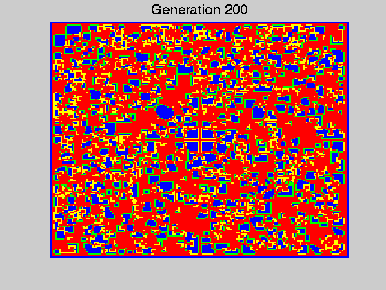

Contents
% % Dan Calderon, CAAM 210, Spring 2010, HW 14 %
evodriver5.m
%calls on evo, % sets sizes and b (and a plotflag) % in order to generate the necessary plots. function evodriver5
evo(199,199,1.9,200)
evo.m
evo delegates to three subfunctions score(A,b) which calculates the score for each entry in A advance(S,A) which uses the score to determine the next generation evodisp(A,An) which compares the prev. generation to current to generate representative colors for the state
function evo(M,N,b,gen)
FC = zeros(1,gen); A = ones(M,N); % M-by-N starting template A((M+1)/2,(N+1)/2) = 0; %A = round(rand(M,N)/1.8); for itc = 1:gen, % play for gen generations clf S = score(A,b); % living are red An = advance(S,A); FC(itc) = sum(sum(A))/(M*N); if itc == 200 figure(1) evodisp(A,An); title(['Generation ' num2str(itc)],'fontsize',16) axis off end A = An; end return
score.m
% calculates the score for each entry in A
function S = score(A,b)
S = A; M = size(A,1); N = size(A,2); for i=2:M-2, % dead border for j=2:N-2, nC = sum(sum(A(i-1:i+1,j-1:j+1))); % # of C neighbors % if C but if A(i,j) == 1, % lonely or crowded die S(i,j) = nC; else S(i,j) = nC*b; end end end return
advance.m
%uses the score to determine the next generation % %step in time
function An = advance(S,A)
An = A; M = size(A,1); N = size(A,2); for i=2: M-2, % dead border for j=2: N-2, Amax = max(max(S(i-1:i+1,j-1:j+1))); % # of living neighbors [indx, indy] = find(S == Amax,1); if S(i,j) < Amax, % if alive but % lonely or crowded die An(i,j) = A(indx,indy); end end end return
evodisp.m
paints a square blue when C remains C paints a square red when D remains D paints a square yellow when C becomes D paints a square green when D becomes C
function evodisp(A,An) map = [0 0 1; 1 0 0; 1 1 0; 0 1 0]; colormap(map) display = An; display(display == A & display ==1) = 1; display(display == A & display ==0) = 2; display(display ~= A & display ==0) = 3; display(display ~= A & display ==1) = 4; set(gcf,'doublebuffer','on'); % kill flicker axis off image(display) return